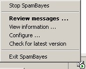
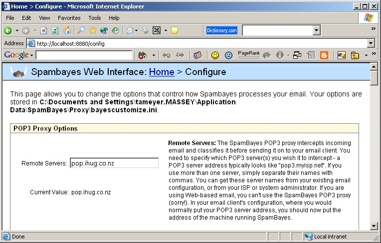
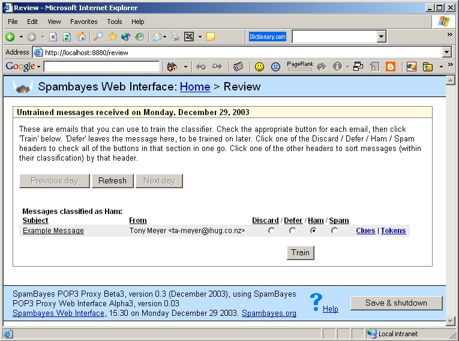

|
|
Note that if you use Microsoft Outlook, you should probably be using the Outlook Addin, which was presented as an option at installation time. If you are using Outlook Express or almost any other mail program, you are in the right place.
SpamBayes is an application that provides spam classification based on statistical analysis of your personal mail. Unlike many other spam detection systems, SpamBayes actually learns what you consider spam, and continually adapts as both your regular email and spam patterns change.
This SpamBayes application sits between your mail server (generally at your Internet Service Provider) and your mail program. Your mail program still believes it is talking to a real mail server, but instead it is talking to SpamBayes, which acts as a proxy between the two.
All your mail arrives as normal in your mail program, but, as it arrives, SpamBayes adds a classification to the messages - either ham (good mail), spam (bad mail), or unsure (messages that SpamBayes isn't certain about). You can set your mail program up to automatically filter messages into folders based on this classification - for example you might move all spam messages to a folder called "Junk Mail", and all unsure messages to a folder called "Mail to review".
In order to classify messages, you have to train SpamBayes. The easiest method of doing this is via an interface that SpamBayes presents to you via your web browser. SpamBayes will list all the messages that have been received, and let you train them as ham or spam. You can also configure SpamBayes via this interface in your web browser.
Please remember that this is free software; please be patient, and note that there are plenty of things to improve. There are ways you can help, even if you aren't a programmer - you could help with this documentation, or make a donation, or any number of other ways - please see the main project page for information. The list of Frequently Asked Questions may also answer some of yours, especially considering the (current) lack of documentation - you may wish to start in the "Using SpamBayes" section.
 You should start the SpamBayes Tray Icon program, which was installed into your Start menu. This is the recommended method of operating SpamBayes. If you right-click on this icon you will be presented with a number of options to control SpamBayes (see figure on the right), including an option to configure SpamBayes for your system. Double-clicking on the icon will bring up the messages that SpamBayes has for you to review.
For the most part, SpamBayes just silently works. When you do need to interact with it, you do so via an interface presented in a web browser. If you need help using the interface, click the "Help" button at the bottom of any page. This also explains how you can contact the developers, if you wish to do so.
There is a Windows service program installed, but it is not configured by the installation program. If you configure this manually, you can continue to use the Tray Icon program, as it will control the service instead of running the server internally as it normally does. If you don't know what a "Windows service program" is, don't worry about it; you don't need to use this.
To install the service, perform the following steps:
 There are two configuration steps that you need to take:
When you first start using SpamBayes, all your mail will be classified as 'unsure' because SpamBayes doesn't have any preconceived ideas about what looks like good or bad mail. As soon as you start training the classification will improve, and by the time you've classified even 20 messages of each you'll be seeing quite reasonable results.
 SpamBayes saves a temporary copy of all incoming mail so that classification can be independant of whatever mail client (Outlook Express, Eudora, ...) you are using. You need to run through these messages and tell SpamBayes how to handle mail like that in the future.
If you double-click the tray icon a browser window will open looking like the figure on the right. For each message listed, you need to choose to either discard (don't train on this message), defer (leave training on this message until later), or train (as either good - ham), or bad - spam). You do this by simply clicking in the circle in the appropriate column; if you wish to change all the messages to the same action, you can simply click the column heading.
You are presented with the subject and sender of each message, but, if this isn't enough information for you to make a decision on the message, you can also view the message text (this is the raw text, so you can't do any damage if the message contains a virus or any other malignant data). To do this, simply click on the subject of the message.
Once you have chosen the actions you wish to perform on all the displayed messages, click the Train button at the end of the page. SpamBayes will then update its database to reflect this data.
Note that the messages are split up into the classification that SpamBayes would place the message with current training data (if this is correct, you might choose to Discard the message, rather than train on it - see the SpamBayes wiki for discussion of training techniques). You can also see the Tokens that the message contains (the words in the message, plus some additional tokens that SpamBayes generates) and the Clues that SpamBayes used in classifying the message (not all tokens are used in classification).
So that the page isn't overwhelmingly long, messages waiting for review are split by the day they arrived. You can use the Previous Day or Next Day buttons at the top of the page to move between days. If mail arrives while the review page is open the new messages will not be automatically added to the displayed list; to view the new message, click the Refresh button at the top of the page.
SpamBayes is copyright (C) 2002-4 Python Software Foundation; All Rights
Reserved.
The Python Software Foundation (PSF) holds copyright on all material
in this project. You may use it under the terms of the PSF license;
see LICENSE.txt.
What all this means, in general terms, is that SpamBayes is completely free to use, in pretty much any way you like. You're welcome to distribute it, or even create your own software based on it. Enjoy!
This is free software. Please offer any help you are able to. In particular, contributions to this documentation are welcome! If you don't know where to start, the FAQ has details about how you can help.